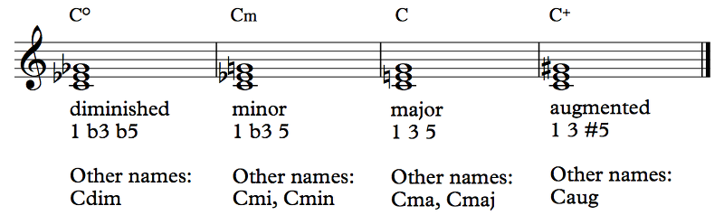
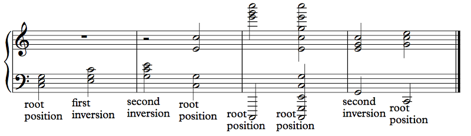
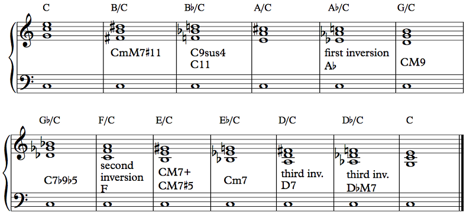
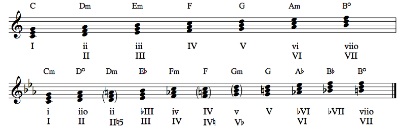
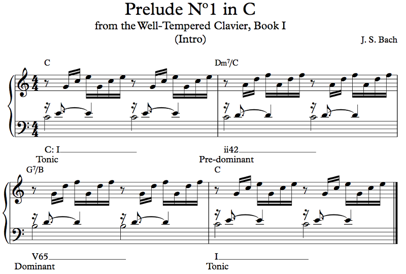

A triad is simply a three note chord in thirds. So, play a note, go up a third and play that note, go up another third and play that note. Counting only major and minor thirds, we get these four kinds (called qualities) of triad:
Example 6.2
As you can see, the diminished triad is made by going up a minor third and then another minor third, so, for example, F diminished is F Ab Cb. The minor triad goes up a minor third then up a major third, so A minor is A C E. The major triad goes up a major third then up a minor third, so D# major is D# Fx A#. The augmented triad goes up a major third then up a major third, so E augmented is E G# B#. You can also think of them as containing a root, third, and fifth. In the diminished triad, the third is minor and the fifth is diminished; in the minor triad, the third is minor and the fifth is perfect; in the major triad, the third is major and the fifth is perfect; in the augmented triad, the third is major and the fifth is augmented. An interesting bit of information here: major and minor chords are named after the thirds that they each contain, while diminished and augmented chords are named after the fifths. (Also, when we say "chord" we often mean "triad", so "an F major chord" actually refers to an F major triad. I just don't want to confuse anyone unnecessarily.)
Before you ask, yes, we will talk about how they're used. But not quite yet.
Now, a chord can contain any number or any position of those notes and it will still be the same chord:
Example 6.3
These are all C major triads, even the ones with more notes! C major is C E G, and all of these chords contain nothing but C's, E's, and G's. That second chord in the third measure is voiced C G E C G E C G E C. Still C major. The specific notes and spacing that a chord uses is known as its voicing. When a note is in the chord twice, it's said to be doubled (or tripled if it's there three times, etc.). So, for example, in the second chord of the second measure, the root C is doubled. The root is the note that the chord is based on, the 1 of the chord, the note that the chord is named after. This is a C major chord, so the root is C.
Just like intervals, chords can also be inverted. The only thing that determines an inversion is the bass note. If the bass note is the root, then the chord is in root position. If the third is in the bass, it's in first inversion; if the fifth is in the bass, it's in second inversion. The other notes can be in any voicing.
If the notes of the chord are as close as possible to each other, like in the first three chords, the chord is said to be in closed position; otherwise it's in open position. When we think about the definition of the chord, we think about the thirds, the 1 3 5, and we think, OK, so the C major chord is C E G. Well, if you just play C E G, it will likely be a bit boring. Varying the voicing is a great way to build interest, and chords in open position often sound much clearer than chords in closed position. When we get to larger chords, the benefit of open position will grow even further.
Oh, because it's definitely going to create confusion later: when we talk about the root, third, and fifth of a chord, we're talking about the root, third, and fifth of the chord, not of the scale. If we're playing a G major chord in the key of C, the 1 3 5 of the chord are G B D, while the 1 3 5 of the scale are C E G. G B D are the 5 7 2 of the scale. It can be a bit difficult to keep track of whether we're talking about scale degrees or chord members, but that's how it is!
That's a good question. I mean, can you? Obviously. See Rule 0. But if you don't include any C's, or any E's, or any G's, or something like that, is it still a C major triad? Technically, no. You can argue that it's an incomplete triad, but you can also argue that it isn't. On the other hand, a situation in which there's only an E sounding could have a C major harmony. The E, being the third of C, strongly suggests the major triad, and while there's ambiguity, the surrounding notes can make a case for the harmony still being C major. It's even more clear if there's only a C and an E. In fact, you can omit the fifth without any problems most of the time. You might see a chord voiced C C E C or C E C E and it's still considered C major. If you only see two notes, you can generally assume that the fifth isn't one of them. Unless, of course, it's the root that's being omitted. Common Practice music doesn't do that so much, but there's no reason why you can't.
Basically, the answer is that it's complicated. You have to know it when you see it. We'll get to other chords where the individual notes matter much less, but we're not quite there yet.
Chords can also have chord symbols. That's just a shorthand form of the name of the chord, often written above lead sheets like in Example 6.2 (lead sheets are what you call sheet music that's a melody plus some chord symbols). Sibelius defaults to the symbols given in 6.2: the circle for diminished, lowercase m for minor, nothing for major, plus for augmented. But...
It's not so simple. Different musical communities have come up with different ways to represent chords. Chord symbols are used in popular music only, so I'll call them pop chord symbols; classical analysis does something else entirely (which we'll talk about shortly). But people write symbols in different ways. You've seen the little circle for diminished, but you can also see Cdim. Minor can be written Cm, Cmi, Cmin, or even C–. Major is almost always just C, but it can be Cma or Cmaj as well. The augmented chord can be the plus or it can be Caug. Actually, it can be worse. Instead of Cdim, it could be Cm(b5), and instead of Caug, it could be C(#5). When you see numbers like that, they're called chord alterations, and they tell you to alter or add the specified note. For example, C7b9 is a C7 chord (we'll cover this in a bit) with an added b9. Chord symbols are not written consistently, but if you're having trouble reading it, it's because the person who wrote it was an asshole. Which doesn't help you interpret it, but it's good to blame someone else for your problems.
Pop chord symbols always represent root position chords — that is, chords where the root is in the bass. To represent inversions, we use slash notation. When you see something like C/E, that means play a C major chord and put an E in the bass. This notation isn't actually limited to inversions. C/E is a first inversion C major chord, but B/C is a B major chord — B D# F# — with a C in the bass. C is not part of the B major triad, so this isn't an inversion of B major. This is called a slash chord:
Example 6.4
We will learn about them in this chapter. They are alternate names for these chords, because you can take, for example, a Bb/C chord and decide that it's not a Bb-rooted chord with a C in the bass but a C chord that happens to have the same notes (or something enharmonic; pop chord symbols often ignore things like spelling). This is to point out some of the ambiguities inherent in chord symbols. Furthermore, not all combinations of notes produce chords with a ready name. That doesn't mean you can't play it, obviously, but it does make it a bit trickier to talk about it. Ultimately, chord names exist for that reason, to be able to talk about collections of notes played at the same time.
By the way, these chords sound pretty cool, don't they? The last four of these are actually part of the final vamp in Tom Jobim's Águas de Março (well, that song is originally in Bb, not C, so the chords are transposed down a whole step). Also, this voicing, with a bass note in the left hand and a second inversion closed position triad in the right hand, is a fairly common one in jazz 'comping (meaning "accompanying on the piano", but you know how jazz musicians always have to shorten everything — everything but their songs, anyway).
Chords whose notes are in the key are known as diatonic chords. What counts as "in the key" isn't always clear; minor keys, for example, have three scales that apply to them. Here's a simple list:
Example 6.5
All right, let's explain what's going on in this picture. The triads diatonic to a major key are just the ones with no accidentals (relative to the key signature, obviously). So, pick a note of the scale, go up a diatonic third (which could be major or minor depending on the scale degree), go up another diatonic third (which again could be major or minor). These chords are labeled with a Roman numeral corresponding to their root. This Roman numeral is the chord's function. Actually, chord function is more general than that, but we'll make the distinction in the next section.
Now, here's where it gets balls-to-the-wall crazy. See those two rows of Roman numerals? They're because people have different styles of using them. I put my style in the top row, and that's the style I'll continue to use in this book, but many classical theorists, including my theory prof in college, prefer the second style.
In the second style, the Roman numeral indicates the diatonic chord built on that scale degree. So, the diatonic chord built on the third degree is the III. In C major, that would be E minor, and in C minor, that would be Eb major. Any modifications to the chord are made via symbols. You can see above how the Dm chord isn't really diatonic to C minor, but it is sometimes used when the melody goes into melodic minor. The 5th of the II chord is Ab, but for this chord it's A natural. So, natural on the 5. An accidental without a symbol refers to the third (this is from figured bass notation, which we'll talk about briefly in a bit but basically it's Baroque-era lead sheets but weirder). The exceptions are the V and VII chords, which are from harmonic minor (they're the whole point of having harmonic minor in the first place). If the root itself is altered, it gets an accidental before the numeral.
In the first style, the main difference is that chord quality is indicated by the case of the numeral. Uppercase Roman numerals are major chords, and lowercase Roman numerals are minor chords (put the o next to a lowercase numeral for diminished). Furthermore, Roman numeral scale degrees are relative to the major scale always. This means that if you're in C, iii is E minor and bIII is Eb major, no matter if you're in C major or C minor. You don't have to worry about whether the chord is diatonic; you just need to identify the scale degree of the root. I think this makes things a hell of a lot simpler in modern music, where the keys are adhered to much less strictly.
Welcome to music theory! The main idea of the study of harmony is to understand chords and harmonies in relation to one another, and these relationships are easily understood in terms of Roman numerals. For example, if I play the chords G - C in the key of C major, that's V - I. If I play the chords A - D in the key of D major, that's V - I as well. Both of these sets of chords feature the same V - I relationship, and the Roman numerals make it clear. A big part of music theory is analyzing chord progressions — a bunch of chords in a row — for chord function in order to understand how they work. Some would say that this is the only part of music theory, because it's so all-consuming. The reason I pushed this off until Chapter 6 is to help you see that music theory is much more than slapping Roman numeral labels on chords.
...
Moving on, then.
Some people find the Roman numeral stuff too complicated. The truth is that Roman numerals don't actually say very much about the chord because they were meant to be used on simple chords, and even something like a slash chord isn't easily represented. They're supposed to be a tool for taking complicated concepts and simplifying them, not for accurately representing chords to play. But they're still not simple enough for some purposes. So, there are three main functions that chords can have: pre-dominant, dominant, and tonic. Let's hear an example, first of all (yeah, the right hand is in soprano clef — no, I don't know what could possibly have possessed Bach to do that):
Example 6.6
We'll get to them quite soon. Actually, it's kind of nice that we haven't talked about them yet, because it gives you a bit of a taste of how general chords can be. Hopefully you recognize that measures 1 and 4 have C major chords: C E G C E. The notes aren't all played at the same time, making it an arpeggio, also known as a broken chord, rather than a true chord. It would be more correct to talk about the C major harmony in bars 1 and 4. Whatever, we're obviously in C major; this is obviously a I chord. The next bar, we have C D A D F. This is a new one, but I'll tell you what it is: a Dm7 chord in third inversion. Dm7 is spelled D F A C, so this is a Dm7 chord, which, in C, is a ii chord (the numbers tell you what kind and inversion of chord it is; don't worry about that for right now). The third bar, the chord is B D G D F, which is a G7 chord (G B D F), this time in first inversion, and this is a kind of V chord. So, our progression is, essentially, I - ii - V - I. It's actually I - ii42 - V65 - I, with the numbers, but when we extract the core of the progression, we strip away the unnecessary numbers and we're just left with I - ii - V - I.
Oh, that's just the key. We write the key name in lowercase for minor and uppercase for major. This one happens to be C major. It will be more relevant when this key starts changing, which it actually does in this prelude, just not in the first four bars!
This particular chord progression was called the exordium progression by my theory professor in college, but apparently nobody else, so you don't have to call it that, I guess. It features the most important relationship in Western music: root movement down a fifth (or up a fourth). We go from a chord rooted on D to a chord rooted on G to a chord rooted on C. This very basic progression is all over jazz as well, though less so in pop music. It basically works like this: the I chord is at rest. The ii chord sets up the V. The V chord pulls towards the I. The I chord is at rest. I, of course, is the triad built on the tonic — it's the tonic triad — and its main purpose is being at rest, being resolved (it generally needs to be in root position to really be at rest, but that's not a hard and fast rule). Any chord that feels resolved is therefore said to have the tonic function. Meanwhile, the V chord pulls towards the tonic. V is built on the dominant, so it's the dominant triad. Therefore, any chord that leads to the tonic is said to have the dominant function. The ii chord sets up the dominant. It's the supertonic triad, but any chord that sets up the dominant is said to have the pre-dominant function (as in, before the dominant). Some theorists actually give this job to the IV chord instead of the ii and call this the subdominant function, but they're really the same thing, and I'm going to stick with pre-dominant because I think that's more accurate.
Here's the confusing bit. It's easy to try to claim that each Roman numeral corresponds to a function. For example, in major, V and viio are dominant, I and vi are tonic, and ii and IV are pre-dominant.
iii is... not used so often, but it's variably said to be dominant, which is weird, or tonic, which is very weird. This highlights some of the problems with this naïve approach. Function can vary. IV chords could actually function as dominants if you give them the chance. I chords are tonic... but not in second inversion. Then they're actually part of a dominant.
Say you're in Em. i is E G B, so in second inversion, it's B E G (or some combination of these notes with B in the bass). V is B D# F#. What happens? The E is a leading tone to the D# and the G is a leading tone to the F# (even in major, where it would be a G# instead). We sometimes say that a second inversion tonic triad is actually a dominant triad with the third and fifth suspended. We'll see plenty of examples of that, don't worry.
OK, now that we know about chord function, it's time to learn all about chord types!